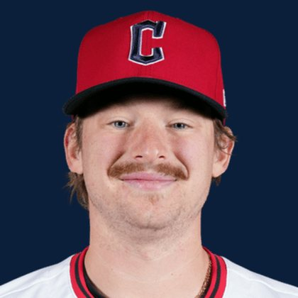

BASEBALLKEEP
Dynasty · Redraft · Diamond
Player File · 1B CLE

Kyle Manzardo
#9 · 1B · Cleveland Guardians · age 25 · B/T LR · 5' 11" / 205 lbs · MLB debut 2024 · Coeur d'Alene, USA
Hitting
| Year | G | AB | R | H | 2B | HR | RBI | SB | BB | SO | AVG | OBP | SLG | OPS |
|---|---|---|---|---|---|---|---|---|---|---|---|---|---|---|
| 2026 | 102 | 312 | 40 | 67 | 10 | 13 | 39 | 0 | 36 | 114 | .215 | .306 | .378 | .684 |
| 2025 | 142 | 470 | 47 | 110 | 19 | 27 | 70 | 2 | 48 | 135 | .234 | .313 | .455 | .768 |
Plus
- 1B CLE sits on The Keep at #209.
Minus
- Keep #209 is the edge of the 300. Deep-league / taxi-squad more than a foundation chip.
BaseBallKeep Take
Kyle Manzardo is #209 on BaseBallKeep's overall dynasty 300, a 23-source mix anchored by RotoGraphs (Aug 14) and The Dynasty Guru points list (Aug 10). 1B for CLE. Lineup #140. Rest-of-season redraft #208. MLB since 2024. From Coeur d'Alene / USA. Bats L, throws R.
BK Value on this rank is 148. Same decaying curve as football: 12,000 at 1.01, a late first a fraction of that. If someone is asking for two firsts, run the calculator. 2026 line: .215 / 13 HR / 0 SB / .684 OPS in 102 games.
The 23-board average is 204.0 on 2 lists that actually ranked him — unranked sources are skipped, never treated as 999. High 197, low 211.
Dynasty pays the next five years. Redraft pays September. If those two ranks diverge, that is the instruction: hold the kid or cash the veteran.
Flags fly forever. We will refresh this file with The Keep. September baseball is a proving ground, not a coronation.
Every Board
Spread 197–211 · 2 sources
| Source | Rank |
|---|---|
| TDG Points | 197 |
| ATC ROS | 211 |
On The Keep nearby — Spencer Steer (#207) · Cam Smith (#208) · Thomas White (#210) · Nico Hoerner (#211)
Same position on the 300 — Nick Kurtz #9 · Pete Alonso #29 · Matt Olson #31 · Vladimir Guerrero Jr. #41 · Munetaka Murakami #55 · Rafael Devers #57
All players · The Keep · The Lineup · Pitchers · Calculator